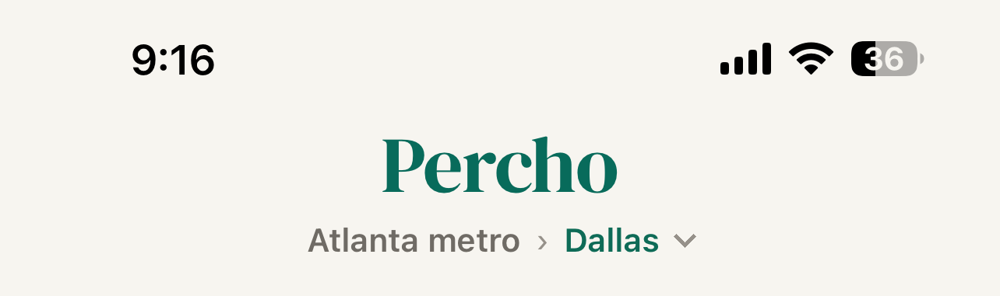
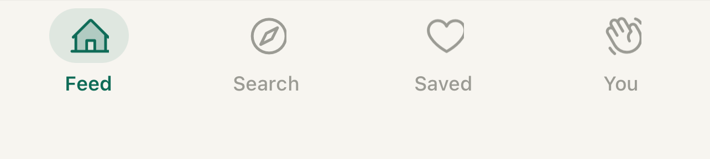

<!doctype html>
<html lang="en">
<head>
<meta charset="utf-8">
<meta name="viewport" content="width=device-width, initial-scale=1">
<meta name="robots" content="noindex">
<title>Percho feed page — the band under the card</title>
<style>
:root{
  --bg:#F7F5F0; --ink:#2B2116; --ink2:#6F6B65; --ink3:#96918A; --accent:#B45309;
  --green:#0E6B57; --neg:#B3402A;
  --ui: -apple-system, "SF Pro Text", "Helvetica Neue", sans-serif;
}
*{box-sizing:border-box;margin:0;padding:0}
body{background:#DCD7CE;font-family:var(--ui);color:var(--ink);padding:20px}
.nav{max-width:1240px;margin:0 auto 18px;font:400 14px/1.6 var(--ui)}
.nav h1{font:600 22px var(--ui);color:#086B5B;margin-bottom:6px}
.nav p{max-width:820px;color:#5A4E40;margin:4px 0}
.nav b{color:#2B2116}
.gallery{display:flex;flex-wrap:wrap;gap:22px;align-items:flex-start;justify-content:center}
.frame{width:428px}
.cap{min-height:74px;padding:6px 2px;font:600 15px/1.3 var(--ui)}
.cap small{display:block;font:400 12.5px/1.35 var(--ui);color:#6F6B65;margin-top:3px}
.cap em{font-style:normal;color:#B3402A}
/* the phone, at the owner's real geometry: 428 x 926 pt */
.phone{position:relative;width:428px;height:926px;background:var(--bg);overflow:hidden;border-radius:44px;box-shadow:0 18px 44px rgba(0,0,0,.25)}
.hdr{position:absolute;left:0;top:0;width:428px;display:block}
.tab{position:absolute;left:0;bottom:0;width:428px;display:block}
/* the card: left 16, width 396; top/height per frame */
.card{position:absolute;left:16px;width:396px;border-radius:28px;overflow:hidden;
  background:url("./card.jpg") center/cover no-repeat;background-size:100% 100%;
  box-shadow:0 3px 10px rgba(32,28,22,.05),0 16px 38px rgba(32,28,22,.085)}
/* the measured band, drawn as a ruler so the space is a number, not a vibe */
.band{position:absolute;left:0;right:0;display:flex;align-items:center;justify-content:center;
  font:600 11px var(--ui);letter-spacing:.4px;color:#B3402A}
.band.ok{color:#0E6B57}
.band i{position:absolute;left:22px;right:22px;height:1px;background:currentColor;opacity:.35}
.band span{position:relative;background:var(--bg);padding:0 8px}
/* A3 — the scope crumb, moved under the card */
.crumb{position:absolute;left:0;right:0;display:flex;flex-direction:column;align-items:center;justify-content:center;gap:5px}
.crumb .l1{display:flex;align-items:center;gap:6px;font:600 15px var(--ui);color:var(--ink)}
.crumb .l1 .root{color:var(--ink2);font-weight:500}
.crumb .l1 .sep{color:var(--ink3);font-weight:400}
.crumb .l1 .cur{color:var(--green)}
.crumb .hint{font:400 12px var(--ui);color:var(--ink3)}
/* A4 — deck controls */
.ctrls{position:absolute;left:0;right:0;display:flex;align-items:center;justify-content:center;gap:26px}
.disc{width:56px;height:56px;border-radius:28px;background:#fff;display:flex;align-items:center;justify-content:center;
  box-shadow:0 2px 8px rgba(32,28,22,.10),0 8px 20px rgba(32,28,22,.08)}
.disc.sm{width:44px;height:44px;border-radius:22px}
.disc svg{display:block}
/* A5 — tightened header (drawn, not cropped) */
.hdrTight{position:absolute;left:0;top:0;right:0;height:96px;background:var(--bg)}
.hdrTight .status{height:44px;display:flex;align-items:flex-end;justify-content:space-between;padding:0 30px 6px 34px;font:600 15px var(--ui)}
.hdrTight .row{height:52px;display:flex;align-items:center;justify-content:center;gap:10px}
.hdrTight .word{font:600 26px var(--ui);letter-spacing:-.6px;color:#086B5B}
.hdrTight .sc{display:inline-flex;align-items:center;gap:5px;font:600 13px var(--ui);color:var(--green)}
.note{position:absolute;left:16px;right:16px;text-align:center;font:400 11.5px/1.4 var(--ui);color:var(--ink3)}
</style>
</head>
<body>
<div id="root"></div>
<script>
/* Everything below is at the owner's real numbers, measured off his 2026-09-05
   screenshot (iPhone 428x926 pt): header block 127, card 396x575 (aspect 0.689
   — the tour canvas is 1080x1576 = 0.685), tab bar 96. Stage = 127..820. */
const HDR=127, TABTOP=830, STAGE_TOP=127, STAGE_BOT=820, CARD_W=396, ASPECT=0.689;
const STAGE = STAGE_BOT - STAGE_TOP;               // 693
const CARD_H = Math.round(CARD_W / ASPECT);        // 575 — the card at its video aspect

const svg = {
  chev:'<svg width="13" height="13" viewBox="0 0 24 24" fill="none" stroke="currentColor" stroke-width="2.2" stroke-linecap="round" stroke-linejoin="round"><path d="M6 9l6 6 6-6"/></svg>',
  x:'<svg width="24" height="24" viewBox="0 0 24 24" fill="none" stroke="#B3402A" stroke-width="2.2" stroke-linecap="round"><path d="M6 6l12 12M18 6L6 18"/></svg>',
  heart:'<svg width="24" height="24" viewBox="0 0 256 256" fill="#0E6B57"><path d="M178,40c-20.65,0-38.73,8.88-50,23.89C116.73,48.88,98.65,40,78,40a62.07,62.07,0,0,0-62,62c0,70,103.79,126.66,108.21,129a8,8,0,0,0,7.58,0C136.21,228.66,240,172,240,102A62.07,62.07,0,0,0,178,40Z"/></svg>',
  undo:'<svg width="18" height="18" viewBox="0 0 24 24" fill="none" stroke="#8A7358" stroke-width="2" stroke-linecap="round" stroke-linejoin="round"><path d="M3 7v6h6"/><path d="M3.5 13a9 9 0 1 0 2.1-6.4L3 9"/></svg>',
};

function phone(o){
  const cardTop = o.cardTop, cardH = o.cardH;
  const cardBottom = cardTop + cardH;
  const gapAbove = cardTop - STAGE_TOP;
  const gapBelow = TABTOP - cardBottom;
  const header = o.tightHeader
    ? `<div class="hdrTight"><div class="status"><span>9:41</span><span>●●●● ᯤ ▮</span></div>
       <div class="row"><span class="word">Percho</span><span class="sc">Dallas ${svg.chev}</span></div></div>`
    : ``;
  const bands = [];
  if (o.rulers !== false) {
    if (gapAbove > 14) bands.push(`<div class="band ${gapAbove<=70?'ok':''}" style="top:${STAGE_TOP}px;height:${gapAbove}px"><i></i><span>${Math.round(gapAbove)} pt</span></div>`);
    if (gapBelow > 14) bands.push(`<div class="band ${gapBelow<=70?'ok':''}" style="top:${cardBottom}px;height:${gapBelow}px"><i></i><span>${Math.round(gapBelow)} pt empty</span></div>`);
  }
  const art = o.art ? `background-image:url('./${o.art}')` : "";
  return `<div class="phone">
    ${header}
    <div class="card" style="top:${cardTop}px;height:${cardH}px;${art}"></div>
    ${bands.join("")}
    ${o.extra||""}
    
  </div>`;
}

/* How much of the film gets cut when the card is taller than the tour's own
   1080x1576 frame: cover scales to fill the height, so the loss is horizontal. */
function crop(cardH){
  const need = cardH * 0.685;               // width the video wants at this height
  return need <= CARD_W ? 0 : (need - CARD_W) / need;
}
const pct = n => (n*100).toFixed(1) + "%";

const FRAMES = {
  A0:{title:'A0 · What ships now — all the slack under the card',
      sub:'Measured off your screenshot: the card is right (396×575, the tour\'s own aspect), but phase179 anchored it to the stage top this morning, so <em>every</em> bit of the stage\'s slack — 128 pt — piles up in one band under it.',
      html:()=>phone({cardTop:STAGE_TOP, cardH:CARD_H})},
  A1:{title:'A1 · Split the slack again (what it was before this morning)',
      sub:'59 pt above, 69 pt below. This is the version you called a hole in the page, so it is here for reference, not as a proposal.',
      html:()=>phone({cardTop:STAGE_TOP + Math.round((STAGE-CARD_H)/2), cardH:CARD_H})},
  A2:{title:'A2 · Card fills the stage ★ recommended',
      sub:`No band at all: the card takes the whole stage (693 pt), so the page is header · card · tab bar and nothing else. Cost is real and worth seeing — the film is cut <em>17%</em> on the sides (8.5% each edge — the frame below is composited from your own tour, so this is the real loss), because the card gets taller than the 1080×1576 canvas.`,
      html:()=>phone({cardTop:STAGE_TOP, cardH:STAGE, art:'card-693.jpg'})},
  A2b:{title:'A2b · Card fills most of it — the middle setting',
      sub:`Card 640 pt: a 53 pt band left under it (enough to breathe, not a hole), and the film loses only <em>10%</em>. If A2 crops too hard on a real tour, this is the same idea one notch back.`,
      html:()=>phone({cardTop:STAGE_TOP, cardH:640, art:'card-640.jpg'})},
  A3:{title:'A3 · Give the band a job: the scope moves under the card',
      sub:'Card and crop unchanged. "Atlanta metro › Dallas" leaves the header and sits in the band — where your thumb is — and the header shrinks to the wordmark. The empty space stops being empty without the film losing a pixel.',
      html:()=>phone({cardTop:STAGE_TOP, cardH:CARD_H, rulers:false, extra:
        `<div class="crumb" style="top:${STAGE_TOP+CARD_H}px;height:${TABTOP-(STAGE_TOP+CARD_H)}px">
           <div class="l1"><span class="root">Atlanta metro</span><span class="sep">›</span><span class="cur">Dallas</span><span style="color:var(--ink3);display:flex">${svg.chev}</span></div>
           <div class="hint">Swipe right to keep · left to pass</div>
         </div>`})},
  A4:{title:'A4 · Give the band a job: deck controls',
      sub:'Pass / Save / Bring back as buttons in the band. Same card, same crop, and swiping keeps working — this is the visible affordance for people who do not know the deck is swipeable.',
      html:()=>phone({cardTop:STAGE_TOP, cardH:CARD_H, rulers:false, extra:
        `<div class="ctrls" style="top:${STAGE_TOP+CARD_H}px;height:${TABTOP-(STAGE_TOP+CARD_H)}px">
           <div class="disc sm">${svg.undo}</div><div class="disc">${svg.x}</div><div class="disc">${svg.heart}</div>
         </div>`})},
  A5:{title:'A5 · Take the space off the top instead',
      sub:'Header goes from 127 pt to 96: the wordmark shrinks and the scope sits beside it on one row. The card grows into what that frees — 396×606, the film loses 5% on the sides — and the band drops to 32 pt.',
      html:()=>phone({tightHeader:true, cardTop:96+12, cardH:606, art:'card-606.jpg'})},
};

const q=new URLSearchParams(location.search); const only=q.get('only');
const root=document.getElementById('root');
function fit(){const w=Number(q.get('w'))||window.innerWidth; const k=Math.min(1,(w-14)/428); document.querySelectorAll('.frame').forEach(el=>{el.style.zoom=String(k);});}
if(only && FRAMES[only]){ document.body.style.padding='0'; root.innerHTML=FRAMES[only].html(); }
else{
  const keys=Object.keys(FRAMES);
  root.innerHTML = `<div class="nav"><h1>The feed page — what to do with the band under the card</h1>
    <p>Every frame is at your real numbers, measured off this morning's screenshot: <b>428×926 pt</b>, header <b>127</b>, card <b>396×575</b>, tab bar <b>96</b>. The card and the tab bar in each frame are your actual pixels, not a redraw.</p>
    <p>The card's height is not free: the tour canvas is 1080×1576 (aspect 0.685), so a taller card at the same width starts cutting the film left and right. Each frame says how much.</p>
    <div>Jump: ${keys.map(k=>`<a href="#${k}" style="color:#B45309;font-weight:600;margin-right:10px;text-decoration:none">${k}</a>`).join('')}</div></div>
    <div class="gallery">${keys.map(k=>`<div class="frame" id="${k}"><div class="cap">${FRAMES[k].title}<small>${FRAMES[k].sub}</small></div>${FRAMES[k].html()}</div>`).join('')}</div>`;
  fit(); window.addEventListener('resize',fit);
}
</script>
</body>
</html>
